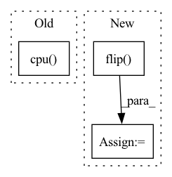

Pattern ID :33912
Before Change
if n_mics == 1:
estimated_sources = estimated_sources.mean(dim=2, keepdim=True)
mixture = mixture.cpu()
estimated_sources = estimated_sources.cpu()
estimated_sources_channels = estimated_sources.size()[:-1]
y = estimated_sources.view(-1, estimated_sources.size(-1))After Change
if n_mics == 1:
mixture = torch.tile(mixture, (1, 1, NUM_CHANNELS_MUSDB18, 1))
elif n_mics == 2:
mixture_flipped = torch.flip( mixture, dims=(2,))
mixture = torch.cat([mixture, mixture_flipped], dim=0)
else:
raise NotImplementedError("Not support {} channels input.".format(n_mics))
In pattern: SUPERPATTERN
Frequency: 3
Non-data size: 3
Instances Fragment ID: 97154698
Project Name: tky823/dnn-based_source_separation
Commit Name: 8928a5c890292684999c3e26d6774d02879b7595
Time: 2021-10-16
Author: 40362510+tky823@users.noreply.github.com
File Name: egs/tutorials/conv-tasnet/src/adhoc_utils.py
M Class Name: AnonimousClass
N Class Name: AnonimousClass
M Method Name: separate_by_conv_tasnet(3)
N Method Name: separate_by_conv_tasnet(3)
M Parent Class:
N Parent Class:
M File Name: egs/tutorials/conv-tasnet/src/adhoc_utils.py
N File Name: egs/tutorials/conv-tasnet/src/adhoc_utils.py
M Start Line: 49
M End Line: 60
N Start Line: 48
N End Line: 69
Before Change
fig, axes = plt.subplots(1, 1, figsize=(12, 4), squeeze=False)
ax = axes[0, 0]
im = ax.imshow(mean_bias.detach().squeeze().cpu() .numpy())
im.set_cmap(cmap=plt.cm.RdBu)
fig.colorbar(im, ax=ax)
ax.set_title("Mean bias [Kelvin]")After Change
init_condition = np.flip(init_condition.detach().cpu().numpy(), 2)
pred = inv_normalize(pred)
pred = np.flip(pred.detach().cpu().numpy(), 2)
gt = np.flip( gt.detach().cpu().numpy(), 2)
bias = pred - gt // B, 1, 32, 64
mean_bias = np.mean(bias, axis=0)
all_mean_bias.append(mean_bias)
all_mean_bias = np.stack(all_mean_bias, axis=0) Fragment ID: 97154696
Project Name: aditya-grover/climate-learn
Commit Name: da02a4f3496c35890c879f72c6b7502159d4b516
Time: 2023-02-21
Author: jason.jewik@ucla.edu
File Name: src/climate_learn/utils/visualize.py
M Class Name: AnonimousClass
N Class Name: AnonimousClass
M Method Name: visualize_mean_bias(3)
N Method Name: visualize_mean_bias(3)
M Parent Class:
N Parent Class:
M File Name: src/climate_learn/utils/visualize.py
N File Name: src/climate_learn/utils/visualize.py
M Start Line: 130
M End Line: 140
N Start Line: 132
N End Line: 146
Before Change
for i, tensor in enumerate([init_condition, gt, pred, bias]):
ax = axes[index][i]
im = ax.imshow(tensor.detach().squeeze().cpu() .numpy())
im.set_cmap(cmap=plt.cm.RdBu)
fig.colorbar(im, ax=ax)
After Change
init_condition, gt = inv_normalize(x), inv_normalize(y)
init_condition = np.flip(init_condition.detach().cpu().squeeze().numpy(), 0)
pred = inv_normalize(pred)
pred = np.flip( pred.detach().cpu().squeeze().numpy(), 0)
gt = np.flip(gt.detach().cpu().squeeze().numpy(), 0)
bias = pred - gt
for i, np_array in enumerate([init_condition, gt, pred, bias]): Fragment ID: 97154702
Project Name: aditya-grover/climate-learn
Commit Name: da02a4f3496c35890c879f72c6b7502159d4b516
Time: 2023-02-21
Author: jason.jewik@ucla.edu
File Name: src/climate_learn/utils/visualize.py
M Class Name: AnonimousClass
N Class Name: AnonimousClass
M Method Name: visualize(5)
N Method Name: visualize(5)
M Parent Class:
N Parent Class:
M File Name: src/climate_learn/utils/visualize.py
N File Name: src/climate_learn/utils/visualize.py
M Start Line: 74
M End Line: 76
N Start Line: 71
N End Line: 79